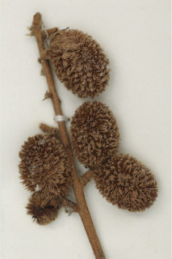
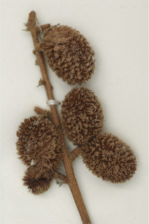

Trees up to 28 m tall.
28 ಮೀ ಎತ್ತರದವರೆಗಿನ ಮರಗಳು.
Trees up to 28 m tall.
மரங்கள் 28 மீ. உயரம் வரை வளரக்கூடியது.
Bark brown, smooth to irregularly flaky when mature.
ತೊಗಟೆ ಕಂದು ಬಣ್ಣದಲ್ಲಿದ್ದು ನಯವಾಗಿರುವುದರಿಂದ ಬಲಿತಾಗ ಅನಿಯತವಾಗಿ ಚಕ್ಕೆಯೇಳುವರೆಗಿನ ರೀತಿಯಲ್ಲಿರುತ್ತದೆ.
Bark brown, smooth to irregularly flaky when mature.
மரத்தின் பட்டை ப்ரவுன், வழுவழுப்பானது முதல் முதிரும் போது ஒழுங்கற்ற செதில்களாக உதிருபவை.
Young branchlets angular, slightly pubescent, later glabrous.
ಎಳೆಯ ಕಿರುಕೊಂಬೆಗಳು ಕೋನಯುಕ್ತವಾಗಿದ್ದು ,ಕೊಂಚ ಮಟ್ಟಿಗೆ ಮೃದು ತುಪ್ಪಳದಿಂದ ಕೂಡಿದ್ದು,ನಂತರ ರೋಮರಹಿತವಾಗಿರುತ್ತವೆ.
Young branchlets angular, slightly pubescent, later glabrous.
சிறிய நுனிக்கிளைகள் குறுக்குவெட்டுத் தோற்றத்தில் கோணங்களுடையது, சிறிது உரோமங்களுடையது, முதிரும் போது உரோமங்களற்றது.
Leaves compound, usually paripinnate, sometime imparipinnate, to 40 cm long, alternate, spiral; rachis angular, pulvinate, glabrous; petiolule 0.3-0.6 cm long, stout, puberulous when young; leaflets 3-6 pairs, opposite, subopposite or alternate; lowermost leaflets stipule like, sessile, broadly reniform; lamina 8-18 (-26) x 5- 8.5 (-10.5) cm, elliptic-oblong, apex rounded to acuminate, base asymmetric or slightly attenuate, margin entire, coriaceous, glaucous beneath; midrib slightly raised above; secondary_nerves 9-12 pairs, nearly straight, curved at margin, minute domatia present at axills; tertiary_nerves obliquely and distantly percurrent.
ಎಲೆಗಳು ಸಂಯುಕ್ತವಾಗಿದ್ದು ಸಾಮಾನ್ಯವಾಗಿ ಸಮಗರಿ ರೂಪಿಗಳಾಗಿರುತ್ತವೆ, ಕೆಲವೊಮ್ಮೆ ಅಸಮಗರಿ ರೂಪಿಗಳಾಗಿರುತ್ತವೆ,40 ಸೆಂ.ಮೀ.ಉದ್ದ ಹೊಂದಿದ್ದು ಪರ್ಯಾಯ ಮತ್ತು ಸುತ್ತು ಜೋಡನಾ ವ್ಯವಸ್ಥೆಯಲ್ಲಿರುತ್ತವೆ;ಅಕ್ಷದಿಂಡು ಕೋನಯುಕ್ತವಾಗಿರುತ್ತದೆ,ಉಬ್ಬಿದ ಬುಡದ ಸಮೇತವಿದ್ದು,ರೋಮರಹಿತವಾಗಿರುತ್ತದೆ;ಉಪತೊಟ್ಟು 0.3 ರಿಂದ 0.6 ಸೆಂ.ಮೀ.ಉದ್ದವಿದ್ದು, ದೃಢವಾಗಿದ್ದು,ಎಳೆಯದಾಗಿದ್ದಾಗ ಸೂಕ್ಷ್ಮ ಮೃದುತುಪ್ಪಳದಿಂದ ಕೂಡಿರುತ್ತದೆ; ಉಪಪತ್ರಗಳು 3 ರಿಂದ 6 ಜೋಡಿಗಳಿದ್ದು, ಅಭಿಮುಖಿ,ಉಪ ಅಭಿಮುಖಿ ಅಥವಾ ಪರ್ಯಾಯ ರೀತಿಯಲ್ಲಿ ಜೋಡಣೆಯಾಗಿರುತ್ತವೆ;ತೀರಾ ಕೆಳಗಿನ ಉಪಪತ್ರಗಳು ಕಾವಿನೆಲೆಗಳನ್ನು ಹೋಲುತ್ತವೆ,ತೊಟ್ಟುರಹಿತವಾಗಿರುತ್ತವೆ ಹಾಗೂ ವಿಶಾಲವಾದ ಮೂತ್ರಪಿಂಡದ ಆಕಾರದಲ್ಲಿರುತ್ತವೆ;ಪತ್ರಗಳು 8-18(-26) X 5-8.5(-10.5) ಸೆಂ.ಮೀ. ಗಾತ್ರ ಹೊಂದಿದ್ದು,ಅಂಡವೃತ್ತ-ಚತುರಸ್ರದ ಆಕಾರ,ದುಂಡಾಗಿರುವುದರಿಂದ ಕ್ರಮೇಣ ಚೂಪಾಗುವವರೆಗಿನ ಮಾದರಿಯ ತುದಿ, ಅಸಮ್ಮಿತಿಯಾದ ಅಥವಾ ಸ್ವಲ್ಪಮಟ್ಟಿಗೆ ಒಳಬಾಗಿದ ಬುಡ,ನಯವಾದ ಅಂಚು,ತೊಗಲನ್ನೋಲುವ ಮೇಲ್ಮೈ ಹೊಂದಿದ್ದು ತಳಭಾಗದಲ್ಲಿ ಮಾಸಲು ಬೂದು ಹಸಿರು ಬಣ್ಣವನ್ನು ಹೊಂದಿರುತ್ತವೆ;ಮಧ್ಯನಾಳ ಮೇಲ್ಭಾಗದಲ್ಲಿ ಕೊಂಚ ಮೇಲೆದ್ದಿರುತ್ತದೆ;ಎರಡನೇ ದರ್ಜೆಯ ನಾಳಗಳು 9 ರಿಂದ 12 ಜೋಡಿಗಳಿದ್ದು,ಬಹುಮಟ್ಟಿಗೆ ನೇರವಾಗಿದ್ದು,ಅಂಚಿನ ಬಳಿ ಬಾಗಿರುತ್ತವೆ ಹಾಗೂ ಅಕ್ಷಾಕಂಕುಳಿನಲ್ಲಿ ಸಹಜೀವಿ ಗೂಡುಗಳ ಸಮೇತವಿರುತ್ತವೆ;ಮೂರನೇ ದರ್ಜೆಯ ನಾಳಗಳು ಓರೆಯಾಗಿ ಮತ್ತು ಹೆಚ್ಚಿನ ಅಂತರವನ್ನೊಳಗೊಂಡು ಎಲೆ ದಿಂಡಿಗೆ ಅಡ್ಡವಾಗಿ ಕೂಡುತ್ತವೆ.
Leaves compound, usually paripinnate, sometime imparipinnate, to 40 cm long, alternate, spiral; rachis angular, pulvinate, glabrous; petiolule 0.3-0.6 cm long, stout, puberulous when young; leaflets 3-6 pairs, opposite, subopposite or alternate; lowermost leaflets stipule like, sessile, broadly reniform; lamina 8-18 (-26) x 5- 8.5 (-10.5) cm, elliptic-oblong, apex rounded to acuminate, base asymmetric or slightly attenuate, margin entire, coriaceous, glaucous beneath; midrib slightly raised above; secondary_nerves 9-12 pairs, nearly straight, curved at margin, minute domatia present at axills; tertiary_nerves obliquely and distantly percurrent.
இலைகள் கூட்டிலை, இரட்டைபடை சிறகுவடிவக்கூட்டிலை (பேரிபின்னேட்), சிலசமயங்களில் ஒற்றைபடை சிறகு வடிவக்கூட்டிலைகள், 40 செ.மீ. நீளமானது, மாற்றுஅடுக்கமானவை, சுழல் போன்று அமைந்தவை; மத்தியகாம்பு (ராக்கிஸ்) குறுக்குவெட்டுத் தோற்றத்தில் கோணங்களுடையது, பல்வினேட், உரோமங்களற்றது; சிற்றிலைக்காம்பு 0.3-0.6 செ.மீ. நீளமானது, தடித்தவை, இளம்பருவத்தில் உரோமங்களுடையது; சிற்றிலைகள் 3-6 ஜோடிகள், எதிரடுக்கமானவை, கிட்டதட்ட எதிரடுக்கமானவை அல்லது மாற்றுஅடுக்கமானவை; தளத்திலுள்ள ஜோடி சிற்றிலைகள் இலையடிச்செதில் போன்றது, காம்பற்றது, அகன்ற சிறுநீரக வடிவானது; இலை அலகு 8-18 (-26) X 5-8.5 (-10.5) செ.மீ., நீள்வட்டம்-நீள்சதுர வடிவானது, அலகின் நுனி வட்டமானது முதல் அதிக்கூரியது, அலகின் தளம் சமமற்றது அல்லது சிறிது அட்டனுவேட், அலகின் விளிம்பு முழுமையானது, கோரியேசியஸ், அலகின் கீழ்பரப்பு மெழுகு பூசியது போன்றது அல்லது சாம்பல் கலந்த நீல நிறமானது (க்களாக்கஸ்); மையநரம்பு மேற்புறத்தில் அலகின் பரப்பைவிட சிறிது உயர்ந்து இருக்கும்; இரண்டாம் நிலை நரம்புகள் 9-12 ஜோடிகள், கிட்டதட்ட நோரானது, விளிம்பின் அருகில் வளைந்தவை, நுண்ணிய டொமேசியா நரம்புகளின் கோணங்களில் உடையது; மூன்றாம் நிலை நரம்புகள் தளம் நோக்கிய இணையான அகன்ற பெர்க்கரண்ட்.
Inflorescence axillary and terminal panicle; flowers polygamous, subsessile.
ಪುಷ್ಪಮಂಜರಿಗಳು ಅಕ್ಷಾಕಂಕುಳಿನಲ್ಲಿನ ಮತ್ತು ತುದಿಯಲ್ಲಿನ ಪುನಾರಾವೃತ್ತಿಯಾಗಿ ಕವಲೊಡೆಯುವ ಮಧ್ಯಾಭಿಸರ ಮಾದರಿಯವು;ಹೂಗಳು ಸಂಕೀರ್ಣಲಿಂಗಿಗಳಾಗಿದ್ದು ಉಪತೊಟ್ಟುಗಳ ಸಮೇತವಿರುತ್ತವೆ.
Inflorescence axillary and terminal panicle; flowers polygamous, subsessile.
மஞ்சரி இலைக்கோணங்களில் காணப்படுபவை மற்றும் தண்டின் நுனியில் காணப்படும் பேனிக்கிள் வகை மஞ்சரி; மலர்கள் பாலிகேமஸ், காம்பற்றது அல்லது மிகச்சிறிய காம்புடையது.
Drupe, 1-3 cocci, ellipsoid, densely echinate; seeds 1-2, brown, smooth with arils.
ಡ್ರೂಪ್ಗಳು1 ರಿಂದ 3 ಮರಿಫಲಗಳನ್ನೊಳಗೊಂಡಿದ್ದು,ಅಂಡವೃತ್ತದ ಆಕಾರ ಹೊಂದಿರುತ್ತವೆ ಮತ್ತು ಕಂಟಕ ಚರ್ಮದ ಸಮೇತವಿರುತ್ತವೆ;ಬೀಜಗಳು 1 ರಿಂದ 2 ಇದ್ದು,ಕಂದು ಬಣ್ಣ ಹೊಂದಿದ್ದು ನಯವಾದ ಪತ್ರೆಯ ಸಮೇತವಿರುತ್ತವೆ.
Drupe, 1-3 cocci, ellipsoid, densely echinate; seeds 1-2, brown, smooth with arils.
உள்ளோட்டுத்தசைகனி (ட்ரூப்), 1-3 உருண்ட வடிவுடையது (காக்கை), நீள்வட்ட வடிவானது, அடர்த்தியாக முட்களுடையது; விதைகள் 1-2, ப்ரவுன், வழுவழுப்பானது, பத்ரி (ஏரில்) உடையது.


 
